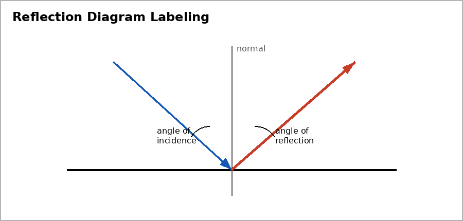

Unit 6 DOK 3.1 Mirror Image Misconception Response V1
Name:
Version 1
Show work and mark answers clearly.
A student says, 'A mirror reverses left and right.'
- Identify what is misleading about the statement.
- Explain mirror image formation using light rays.
- Rewrite the statement more accurately.
Unit 6 DOK 3.1 Mirror Image Misconception Response V2
Name:
Version 2
Show work and mark answers clearly.
A shirt has writing on it and appears reversed in a mirror.
- Explain why this does not mean the mirror randomly swaps left and right.
- Use front-back reversal in your explanation.
Unit 6 DOK 3.1 Mirror Image Misconception Response V3
Name:
Version 3
Show work and mark answers clearly.
An arrow pointing toward a mirror appears to point back toward the observer.
- Explain what direction is reversed.
- Connect your answer to virtual image location.
Unit 6 DOK 3.1 Mirror Image Misconception Response V4
Name:
Version 4
Show work and mark answers clearly.

A student says the mirror image is on the mirror surface.
- Critique the statement.
- Explain why the image appears behind the mirror.
Unit 6 DOK 3.1 Mirror Image Misconception Response V5
Name:
Version 5
Show work and mark answers clearly.
Two students disagree: one says a mirror reverses left-right, another says it reverses front-back.
- Choose the stronger explanation.
- Use a ray or object example to defend it.
Unit 6 DOK 3.1 Mirror Image Misconception Response V6
Name:
Version 6
Show work and mark answers clearly.
A diagram shows reflected rays entering the eye, but the image is drawn in front of the mirror.
- Identify the model error.
- Explain how the brain traces rays backward to locate a virtual image.